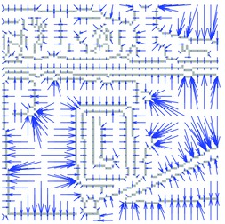
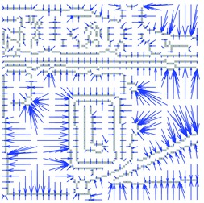

The distance transform of an image image is defined
as
dt(u,v) = min image(u',v') + alpha (u'-u-u0)^2 + beta (v'-v'-v0)^2
u'v'
The most common use of the image distance transform is to propagate
the response of a feature detector to nearby image locations. This is
used, for example, in the implementation of certain deformable part
models or the computation of the Chamfer distance. In this tutorial,
the image distance transform is used to compute the distance of each
image pixel to the nearest element in an edge map, obtained from the
Canny's edge detector. The code of this tutorial is located in the
VLFeat folder in toolbox/demo/vl_demo_imdisttf.m.
VLFeat implements the fast distance transform algorithm of Felzenszwalb and Huttelnocher [1], which has a linear time complexity in the number of image pixels.
Consider the edge map extracted by the MATLAB built-in Canny edge detector on one of VLFeat test images:
im = imread(fullfile(vl_root, 'data', 'a.jpg')) ;
im = im(1:100,1:100,:) ;
imSize = [size(im,1) size(im,2)] ;
edges = zeros(imSize) + inf;
edges(edge(rgb2gray(im), 'canny')) = 0 ;
vl_demo_imdisttf.
The edge map is preprocessed to assign value -inf to
the pixels that do not contain an edge element and o to
the pixels that do. In this way, the distance transform of the image
has for each pixel the distance to the nearest edge element, provided
that one chooses alpha=beta=1 and v0=u0=0 in
the definition. Since these are the default values for VLFeat
implementations, the result an be computed by
[distanceTransform, neighbors] = vl_imdisttf(single(edges)) ;
The matrix neighbors contains for each
pixel (u,v) the index of the pixel (u',v')
where the maximum is attained in the definition of the distance
transform. This allows to associate to know for each pixel which is
the nearest edge element, not just its distance, as exemplified by the
following figure:
 

sqrt(distanceTransform) to the closest
edge element (left) and arrows connecting pixels to their closest
edge element (right). Figure generated
by vl_demo_imdisttf.
References
[1] P. F. Felzenszwalb and D. P. Huttenlocher. Distance transforms of sampled functions. Technical report, Cornell University, 2004.